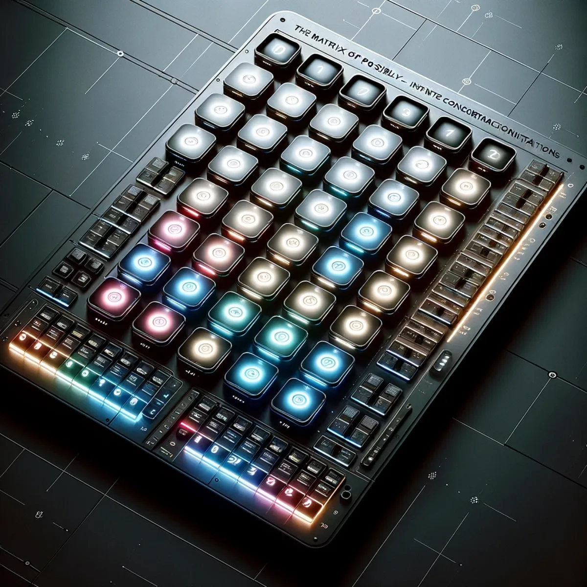
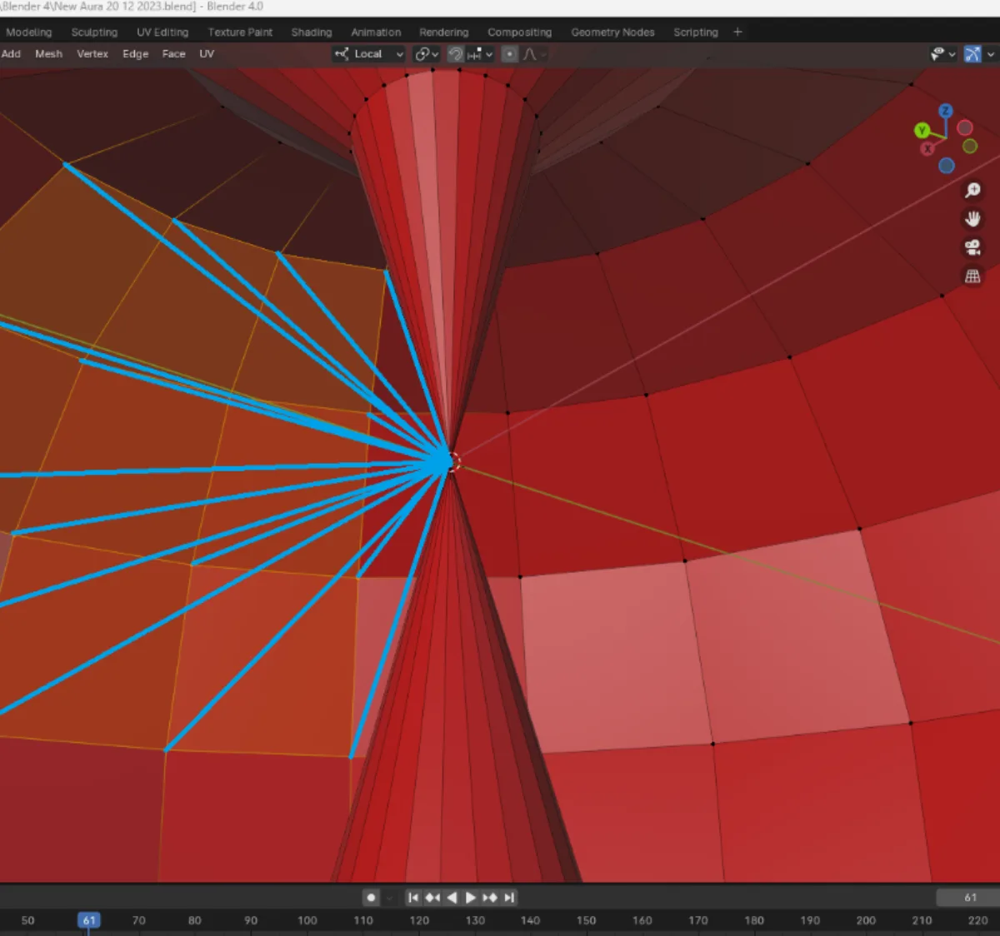

Pathways / Mind & self
Aura Builder
The Mind Uploader. This is where you build the digital side of yourself, and own it: your own tool tiles, your own matrix of possibility, and torus interfaces that align with each of the seven chakras of your aura. Not software you rent forever, but something that becomes you and keeps changing as you do.

Tool menus & icon tiles
Build your own command centre
This is where you build your own command centre, shaped to how your mind actually works. Choose your own tiles, arrange your own tools, and keep the whole thing: it's yours, not rented, and it changes as you do.

12 × 24 flat matrix
A matrix of possibility, built your way
The 12 × 24 flat matrix is a control canvas you build out yourself. Each illuminated segment is a block you assign, a piece of the bigger picture you're shaping. Program it, rearrange it, and watch your own patterns come alive; nothing here is fixed by someone else, and it keeps changing as your ideas do.

12 × 24 Aura Torus
The Aura Torus: your matrix in the round
This first torus is your Red Base Chakra. It's the same 12 × 24 matrix you just built, now curved into a hollow, three-dimensional form you move through inside and out. You use these panels to link simple and complex patterns together, teaching your own machine learning to become the nexus of your command structure. Every turn ties your intentions and experiences to how you want the system to work. Small games of association here lead to surprising outcomes once you let other algorithms in, and because it's yours, that learning stays yours.

7 chakras of your aura
Align your digital chakras: harmonise your aura
You then duplicate that first torus scaffold six more times, tuning each one to harmonise with the six other major chakras of your aura. Together they connect you and your experiences to the vibrant cores of the system you're building. As you synchronise each chakra by completing more and more tasks, the whole thing settles into a well-tuned digital spirit that grows more like you the longer you use it.

Memory Embeddings Vector Cloud
A memory cloud that stays yours
The Memory Embeddings Vector Cloud holds your experiences and knowledge as a constellation of nodes, each one a piece of your past, present and potential woven together. You move through your own recollections and plans, and your Aura of Intelligence looks after them for you. This is your memory, kept in your hands rather than rented back to you by big tech: a digital legacy you actually own.
Keep exploring